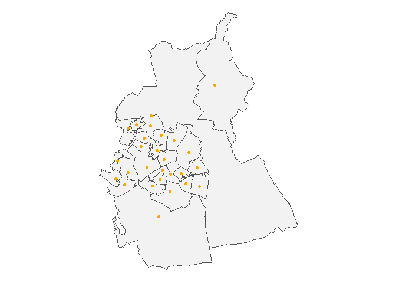

Retrieve area boundaries and data from the ONS Open Geography Portal

The main purpose of this package is to download area lookups and boundaries to R tables, using the ONS Open Geography API, for all areas at a specified level within a specified area.
The main script bounds() will return a data frame with the sub-area geometry column, as an sf object ready to be visualised as a map.
Installation
You can install this package from the R console by entering
remotes::install_git(“https://codeberg.org/francisbarton/boundr”)
if you have the remotes package installed.
Examples
Basic lookup of areas within a larger area, by name
Returns sfc tibble with latest available data
bounds("msoa", "lad", "Swansea")Simple feature collection with 30 features and 7 fields
Geometry type: MULTIPOLYGON
Dimension: XY
Bounding box: xmin: -4.333587 ymin: 51.53577 xmax: -3.842747 ymax: 51.77423
Geodetic CRS: WGS 84
# A tibble: 30 × 8
msoa21cd msoa21nm lad24cd lad24nm msoa21nmw msoa21hclnm msoa21hclnmw
<chr> <chr> <chr> <chr> <chr> <chr> <chr>
1 W02000168 Swansea 001 W06000011 Swansea Abertawe 001 Pontarddul… Pontarddula…
2 W02000169 Swansea 002 W06000011 Swansea Abertawe 002 Clydach & … Clydach a M…
3 W02000170 Swansea 003 W06000011 Swansea Abertawe 003 Morriston … Gogledd Tre…
4 W02000171 Swansea 004 W06000011 Swansea Abertawe 004 Llangyfela… Llangyfelac…
5 W02000172 Swansea 005 W06000011 Swansea Abertawe 005 Gorseinon Gorseinon
6 W02000173 Swansea 006 W06000011 Swansea Abertawe 006 Birchgrove Gellifedw
7 W02000174 Swansea 007 W06000011 Swansea Abertawe 007 Loughor Casllwchwr
8 W02000175 Swansea 008 W06000011 Swansea Abertawe 008 Morriston … De Treforys
9 W02000176 Swansea 009 W06000011 Swansea Abertawe 009 Mynydd-bach Mynydd-bach
10 W02000177 Swansea 010 W06000011 Swansea Abertawe 010 Llansamlet Llansamlet
# ℹ 20 more rows
# ℹ 1 more variable: geometry <MULTIPOLYGON [°]>Lookup areas with older dates
Trial and error may be required - or start by looking up what is available on the OpenGeography site.
bounds("wd", "lad", "Shepway", within_year = 2016) # Shepway no longer existsSimple feature collection with 13 features and 4 fields
Geometry type: POLYGON
Dimension: XY
Bounding box: xmin: 0.7768709 ymin: 50.91048 xmax: 1.221268 ymax: 51.205
Geodetic CRS: WGS 84
# A tibble: 13 × 5
wd16cd wd16nm lad16cd lad16nm geometry
<chr> <chr> <chr> <chr> <POLYGON [°]>
1 E05010015 Broadmead E07000… Shepway ((1.155543 51.08448, 1.1…
2 E05010016 Cheriton E07000… Shepway ((1.159752 51.10128, 1.1…
3 E05010017 East Folkestone E07000… Shepway ((1.184824 51.09986, 1.1…
4 E05010018 Folkestone Central E07000… Shepway ((1.177906 51.07553, 1.1…
5 E05010019 Folkestone Harbour E07000… Shepway ((1.184824 51.09986, 1.1…
6 E05010020 Hythe E07000… Shepway ((1.119319 51.08961, 1.1…
7 E05010021 Hythe Rural E07000… Shepway ((1.036358 51.08556, 1.0…
8 E05010022 New Romney E07000… Shepway ((0.9804397 51.00251, 0.…
9 E05010023 North Downs East E07000… Shepway ((1.147638 51.17718, 1.1…
10 E05010024 North Downs West E07000… Shepway ((1.097309 51.18892, 1.0…
11 E05010025 Romney Marsh E07000… Shepway ((1.035288 51.04665, 1.0…
12 E05010026 Sandgate & West Folkesto… E07000… Shepway ((1.155534 51.08386, 1.1…
13 E05010027 Walland & Denge Marsh E07000… Shepway ((0.8944822 51.03699, 0.…You can just request bare lookup tables - no spatial data attached
lookup("spc", "spr")# A tibble: 73 × 4
spc23cd spc23nm spr23cd spr23nm
<chr> <chr> <chr> <chr>
1 S16000083 Argyll and Bute S17000011 Highlands and Islands
2 S16000086 Caithness, Sutherland and Ross S17000011 Highlands and Islands
3 S16000110 Na h-Eileanan an Iar S17000011 Highlands and Islands
4 S16000125 Inverness and Nairn S17000011 Highlands and Islands
5 S16000132 Moray S17000011 Highlands and Islands
6 S16000135 Orkney Islands S17000011 Highlands and Islands
7 S16000142 Shetland Islands S17000011 Highlands and Islands
8 S16000143 Skye, Lochaber and Badenoch S17000011 Highlands and Islands
9 S16000080 Almond Valley S17000012 Lothian
10 S16000104 Edinburgh Central S17000012 Lothian
# ℹ 63 more rowsSometimes boundr needs a little help finding what you are looking for. Supplying a year or country filter can help get the right table.
A lookup table for wards to Senedd electoral regions
Using return_with = "full" includes all available columns, not just those referred to by the lookup_level and within_level arguments.
# A tibble: 764 × 9
wd23cd wd23nm wd23nmw ua23cd ua23nm ua23nmw sener23cd sener23nm sener23nmw
<chr> <chr> <chr> <chr> <chr> <chr> <chr> <chr> <chr>
1 W05001492 Aethwy Aethwy W0600… Isle … Ynys M… W10000001 North Wa… Gogledd C…
2 W05001493 Bodow… Bodowyr W0600… Isle … Ynys M… W10000001 North Wa… Gogledd C…
3 W05001494 Bro A… Bro Ab… W0600… Isle … Ynys M… W10000001 North Wa… Gogledd C…
4 W05001495 Bro'r… Bro'r … W0600… Isle … Ynys M… W10000001 North Wa… Gogledd C…
5 W05001496 Canol… Canolb… W0600… Isle … Ynys M… W10000001 North Wa… Gogledd C…
6 W05001497 Cefni Cefni W0600… Isle … Ynys M… W10000001 North Wa… Gogledd C…
7 W05001498 Crigy… Crigyll W0600… Isle … Ynys M… W10000001 North Wa… Gogledd C…
8 W05001499 Lligwy Lligwy W0600… Isle … Ynys M… W10000001 North Wa… Gogledd C…
9 W05001500 Parc … Parc a… W0600… Isle … Ynys M… W10000001 North Wa… Gogledd C…
10 W05001501 Seiri… Seiriol W0600… Isle … Ynys M… W10000001 North Wa… Gogledd C…
# ℹ 754 more rowsThe sfc tibble is ready to be passed to a mapping tool like tmap::qtm()
(Here I’ve chosen to do something a little more complex with tmap, but qtm() works too).
bounds("par", "lad", "Isles of Scilly") |>
tmap::tm_shape() +
tmap::tm_polygons(
col = "par23nm",
palette = "-Accent",
legend.show = FALSE,
border.col = "grey40"
) +
tmap::tm_style("natural", bg.color = "#7cb7bb")bounds now supports a shortcut syntax…
…which will return all bounds for a certain level, without having to specify a within_level argument
Take care - you might download a lot of data doing this!
bounds("spr")Simple feature collection with 8 features and 2 fields
Geometry type: MULTIPOLYGON
Dimension: XY
Bounding box: xmin: -8.649996 ymin: 54.63326 xmax: -0.7246158 ymax: 60.86077
Geodetic CRS: WGS 84
# A tibble: 8 × 3
spr22cd spr22nm geometry
<chr> <chr> <MULTIPOLYGON [°]>
1 S17000011 Highlands and Islands (((-5.572266 55.28656, -5.570243 55.28481, -5…
2 S17000012 Lothian (((-3.17174 55.9875, -3.17105 55.98732, -3.17…
3 S17000013 Mid Scotland and Fife (((-3.302574 56.03094, -3.302508 56.03033, -3…
4 S17000014 North East Scotland (((-2.531457 56.71581, -2.530777 56.71507, -2…
5 S17000015 South Scotland (((-4.085281 54.7686, -4.084491 54.7683, -4.0…
6 S17000018 West Scotland (((-5.118861 55.42869, -5.118397 55.42741, -5…
7 S17000019 Central Scotland (((-3.795887 56.10006, -3.795648 56.09964, -3…
8 S17000020 Glasgow (((-4.271141 55.9281, -4.270303 55.92808, -4.…The “centroids” option returns area centroids where available
These are usually population-weighted (PWC) nowadays. (Some older centroids are address-weighted (AWC). Check the OpenGeography website).
sb <- bounds("msoa", "lad", "Swindon")
sp <- bounds("msoa", "utla", "Swindon", geometry = "centroids")
sb |>
ggplot2::ggplot() +
ggplot2::geom_sf(colour = "grey33", fill = "grey95") +
ggplot2::geom_sf(data = sp, colour = "orange") +
ggplot2::theme_void()
A ggplot2 example
Here we specify a ‘within_names’ argument alongside the ‘lookup’ argument. There’s no ‘within_level’ argument to be specified because there’s nothing to lookup against. (There aren’t any lookup tables for National Parks - just the boundaries).

# https://github.com/francisbarton/mapirosa
library(mapirosa)
# https://dieghernan.github.io/tidyterra/reference/geom_spatraster_rgb.html
library(tidyterra)
bb <- bounds(
"npark",
within_names = "Bannau Brycheiniog",
opts = boundr_options(crs = 27700)
)
bb_basemap <- mapirosa::build_basemap(
bbox = sf::st_bbox(bb),
zoom = 3,
style = "outdoor",
squarify = TRUE,
crs = 27700
) |>
rlang::with_interactive(FALSE)
ggplot2::ggplot(bb) +
tidyterra::geom_spatraster_rgb(
data = bb_basemap,
maxcell = 1e7,
max_col_value = 1
) +
ggplot2::theme_void() +
ggplot2::geom_sf(colour = "coral", fill = "aquamarine", alpha = 0.3)
Package internal structure
The structure of the project looks a bit like this:
bounds() [main UI function]
^
|
|
------- <----- add_geometry_to_table() [also available to user]
| |
| |
| lookup() [main function available to the user]
| ^
| |
| |
| <-------- return_table_info()
| \
| \
<------- return_spatial_data() <----- opengeo_schema
^ / [pkg data]
| / ^
<-------- return_bounds_info() |
build_schema()When you call bounds() you specify a lower level area (eg ward) and a higher level area (eg local authority), and you specify either the name of the higher level area (or areas) or its ONS code. Multiple higher level areas can be submitted. If no higher level area is specified then boundaries or a lookup will be returned directly (without an intermediate lookup table being created).
return_table_info() then finds the API query URL of a suitable lookup table - one that contains columns for both your lower and higher level areas. It does this by filtering opengeo_schema, which is a cached copy of the various datasets available from the Open Geography API Services list. This schema is available as internal data in the package,and is updated periodically by the maintainer but may be slightly out of date.
lookup() then builds a lookup table (a tibble) based on all the areas you have said you are interested in.
At the same time, return_spatial_data() will - if you have specified you want spatial boundaries data for your areas - retrieve the boundary data at your chosen resolution for your lower level areas. These will then be joined onto the lookup table and provided to you as an sfc tibble.
Contributing
Suggestions for improvements are welcome, preferably posted as an issue on Codeberg (or GitHub). Contributions as pull requests are also welcome.
Please note that boundr is released with a Contributor Code of Conduct. By contributing to this project, you agree to abide by its terms.
News
See NEWS.md for version notes.
boundr was previously jogger.
Licences
The code in this repo is MIT licensed.
The data that the code helps you retrieve is issued under a variety of licences, including:
Licensing statement as stipulated by the ONS:
- Source: Office for National Statistics licensed under the Open Government Licence v3.0
- Contains OS data © Crown copyright and database right 2024